Transformação DevOps
Criado por Rafael Gomes / @gomex
Quem sou eu
Rafael Gomes
- Soteropolitano
- Apaixonado por compartilhar
- Engenheiro DevOps
- @gomex
- Docker Captain
- gomex.github.io
O que estou fazendo
Livro
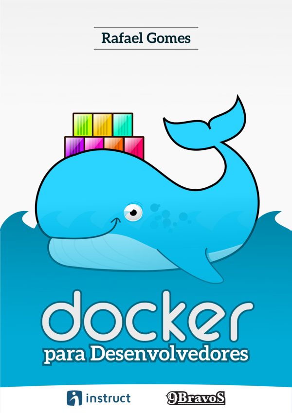- Pague quanto quiser, inclusive nada
- Não precisa saber nada de Docker
- Licenciado em creative commons
- Atualização frequente
Para baixar: tinyurl.com/docker-devel
Acompanhe os slides ou leia depois
https://tinyurl.com/docker-super
Licença:

O que é DevOps?
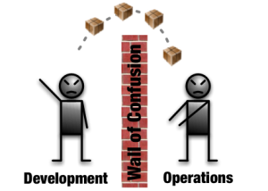DevOps não é ferramenta

DevOps não é cargo
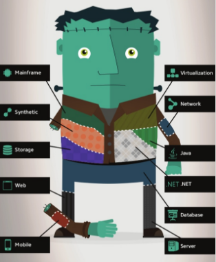DevOps é Cultura!
DevOps na prática
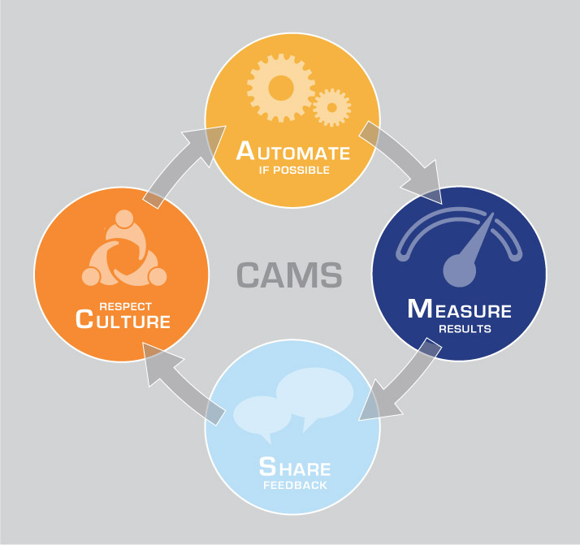Entrega contínua
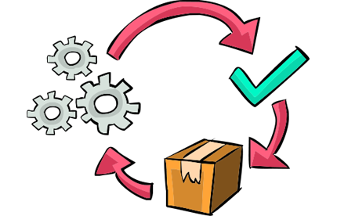Entrega contínua
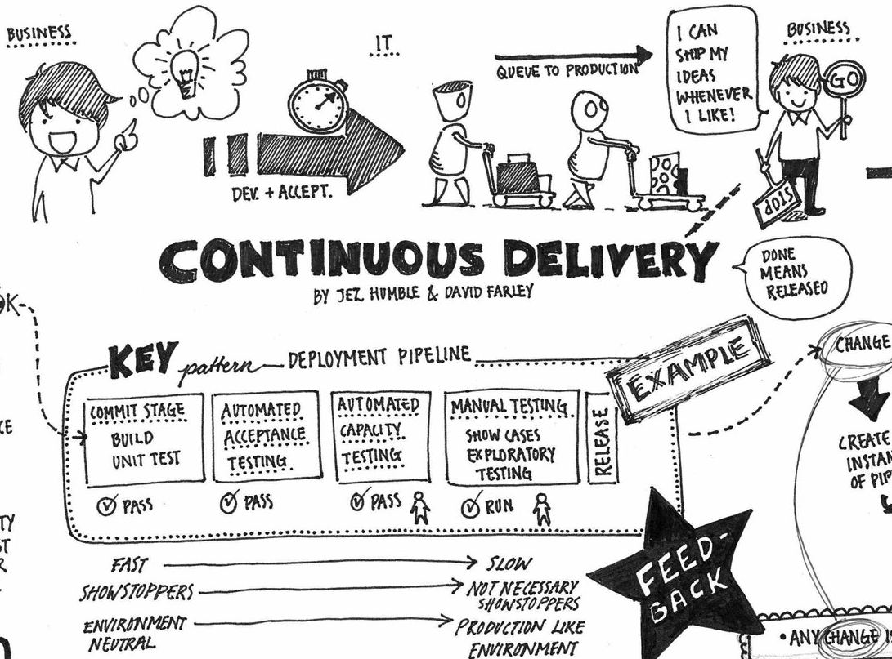Entrega contínua
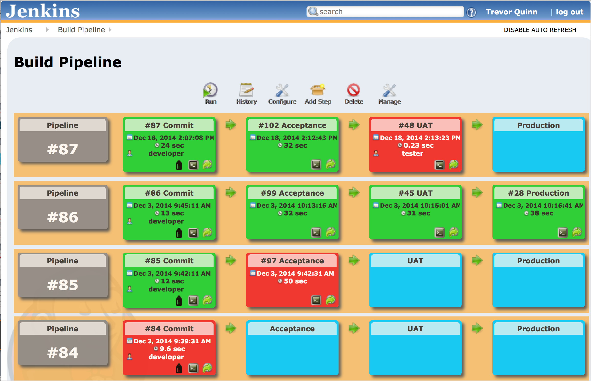Melhores práticas
1 - Base de Código

- Único repositório
- Compartilhar mesma base de código
2 - Dependências
Declare e isole explicitamente as dependências (Ex. Gemfile)
- Não precisa de dependência pré-instalada
- Responsável por toda sua dependência
3 - Configurações
Armazene as configurações no ambiente ou em arquivos não versionados
- Estrita separação da configuração a partir do código
4 - Serviços de Apoio

- Sem distinção entre serviços locais e de terceiros
5 - Construa, lance, execute
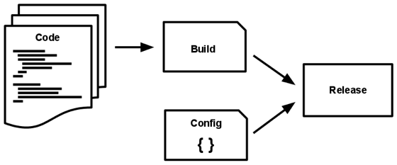- Construção: Converter um repositório de código em um pacote executável
- Lançar: Pegar a construção produzida pelo estágio de construção e a combinar com a atual configuração do deploy.
- Executar: roda o app, de um determinado lançamento, no ambiente de execução
6 - Processos
Execute a aplicação como um ou mais processos que não armazenam estado (Ex. Usar serviços de apoio)
- São stateless(não armazenam estado) e share-nothing
7 - Vínculo de Portas
Exporte serviços via vínculo de portas
- É completamente auto-contido
- Exporta o HTTP como um serviço através da vínculação a uma porta
8 - Concorrência
Escale através do processo modelo
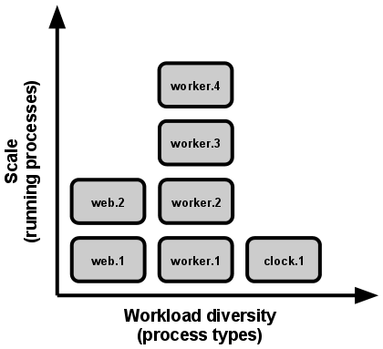- Atribuindo a cada tipo de trabalho a um tipo de processo.
9 - Descartabilidade
Maximize robustez com inicialização rápida e desligamento gracioso
- Minimizar o tempo de inicialização
- Desligam-se graciosamente quando recebem um sinal SIGTERM
10 - Paridade entre desenv/produção
Mantenha o desenvolvimento, homologação e produção o mais similares possível
11 - Logs
Trate logs como fluxos de eventos
- Não se preocupe com o roteamento ou armazenagem do seu fluxo de saída
12 - Processos administrativos
Rode tarefas de administração/gestão em processos pontuais
- Processos administrativos pontuais devem ser executados em um ambiente idêntico
Caso mais comum de dor
TTD baixo
...mas o que é TTD
Time To Delivery (Tempo de Entrega)
Por que o Tempo de entrega é baixo?
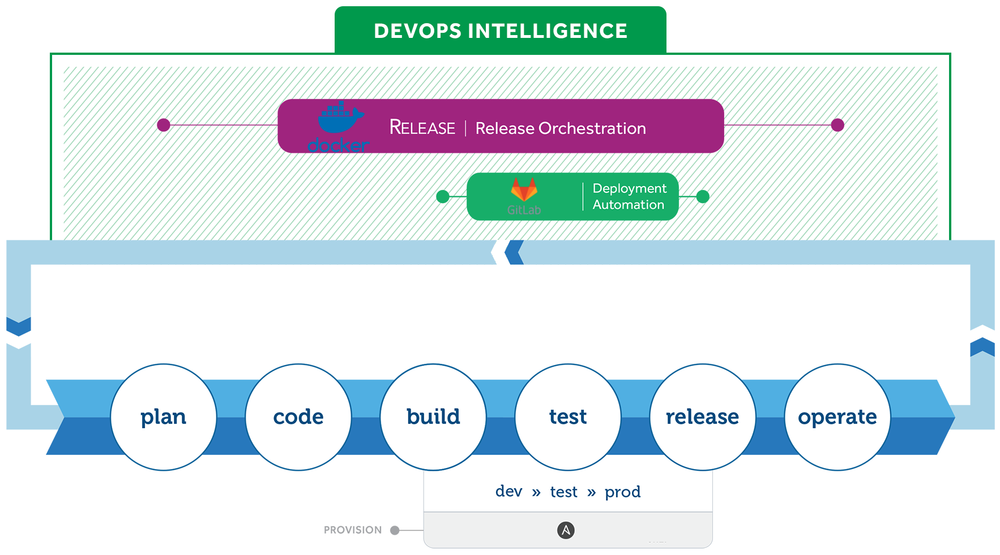Por que o Tempo de entrega é baixo?

Por que o Tempo de entrega é baixo?

Por que o Tempo de entrega é baixo?

Por que o Tempo de entrega é baixo?

Por que o Tempo de entrega é baixo?

Por que o Tempo de entrega é baixo?

O que pode ser feito para otimizar o TTD?
O que pode ser feito para otimizar o TTD?
O que pode ser feito para otimizar o TTD?
O que pode ser feito para otimizar o TTD?
O que pode ser feito para otimizar o TTD?
O que pode ser feito para otimizar o TTD?
O que pode ser feito para otimizar o TTD?
Falando sobre Ansible
Trabalho repetitivo
O que é gerência de configuração
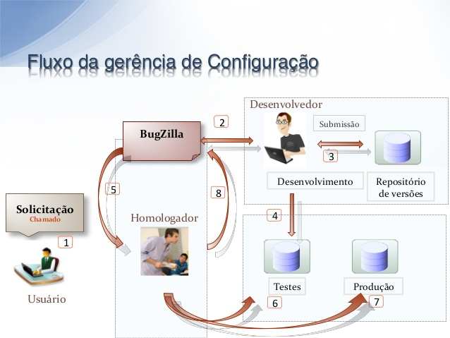Exemplos
- Criação de máquinas virtuais
- Criação de cluster
- Alocação de regras de firewall
- Adição no monitoramento
- Manutenção de serviços
- Documentação desatualizada
Como o ansible funciona?
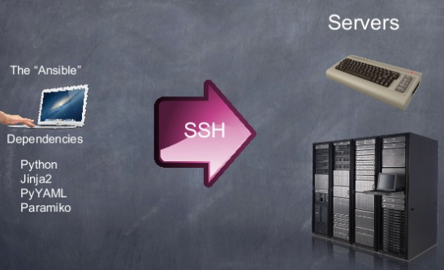Facilidades
- Sintaxe simples (YAML)
- Idempotente
- Ordenação simples
- Sem necessidade de agente
- Documentação viva
- Não é somente gerencia de configuração
Exemplo
Interação com serviços
tasks:
- name: Create an empty bucket
s3:
bucket: cloudformation-workshop-gomex
mode: create
permission: public-read
- name: Upload the cf to s3 bucket
s3:
bucket: cloudformation-workshop-gomex
object: Docker.tmpl
src: Docker.tmpl
mode: put
Exemplo
Criando infraestrutura na nuvem
- name: launch ansible cloudformation example
cloudformation:
stack_name: "ansible-workshop"
state: "present"
region: "us-east-2"
disable_rollback: true
template_url: https://s3.amazonaws.com/cloudformation-crossover-gomex/Docker.tmpl
template_parameters:
EnableCloudStorEfs: "yes"
KeyName: "crossover"
ManagerInstanceType: "t2.medium"
InstanceType: "t2.medium"
tags:
Stack: "ansible-cloudformation"
Exemplo
Manipulando usuário
- user:
name: james
shell: /bin/bash
groups: admins,developers
append: yes
- user:
name: jsmith
generate_ssh_key: yes
ssh_key_bits: 2048
ssh_key_file: .ssh/id_rsa
Exemplo
Manipulando grupo
- group:
name: somegroup
state: present
Exemplo
Manipulando pacotes
- name: install the latest version of ntpdate
package:
name: ntpdate
state: latest
- name: remove the ntpdate package
package:
name: ntpdate
state: absent
Exemplo
Manipulando NewRelic
- newrelic_deployment:
token: AAAAAA
app_name: myapp
user: ansible deployment
revision: '1.0'
Exemplo
Manipulando Monitoramento
- name: Create a new host or update an existing host's info
local_action:
module: zabbix_host
server_url: http://monitor.example.com
login_user: username
login_password: password
host_name: ExampleHost
visible_name: ExampleName
host_groups:
- Example group1
- Example group2
link_templates:
- Example template1
status: enabled
state: present
Video
Falando sobre Docker
Mudança no tamanho das aplicações
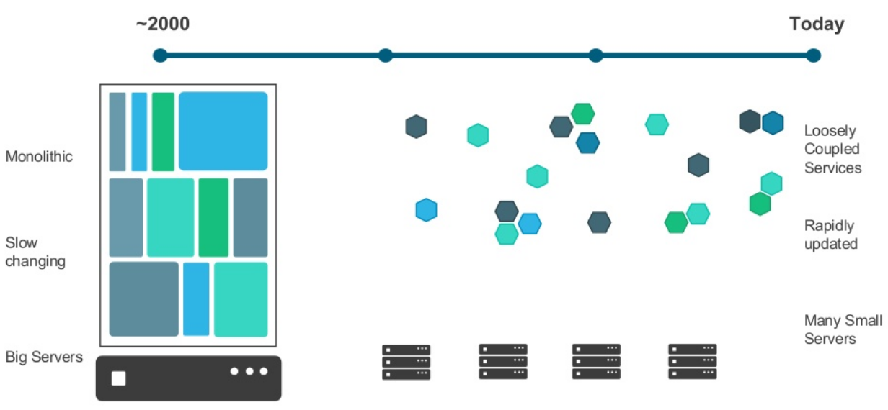Como fazer deploy
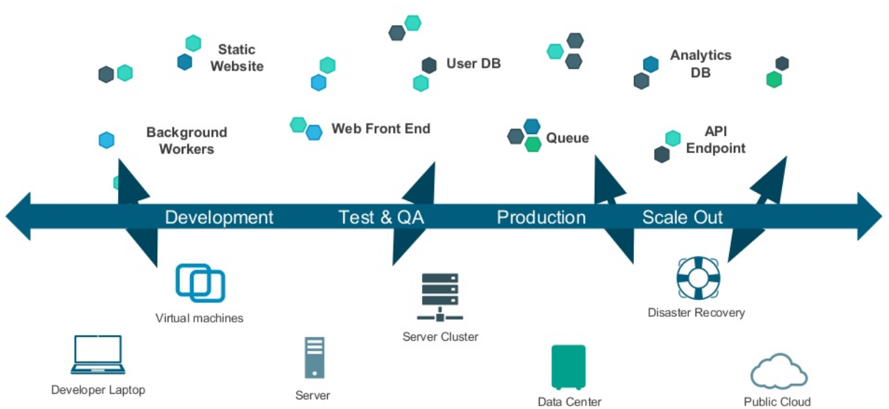Solução Docker
- Pacote com binários e dependências
- Softwares isolados
- Contâiner como artefato padrão
- Portabilidade
- Padronização do processo de desenvolvimento
- Faça uma vez, coloque em qualquer lugar
Docker
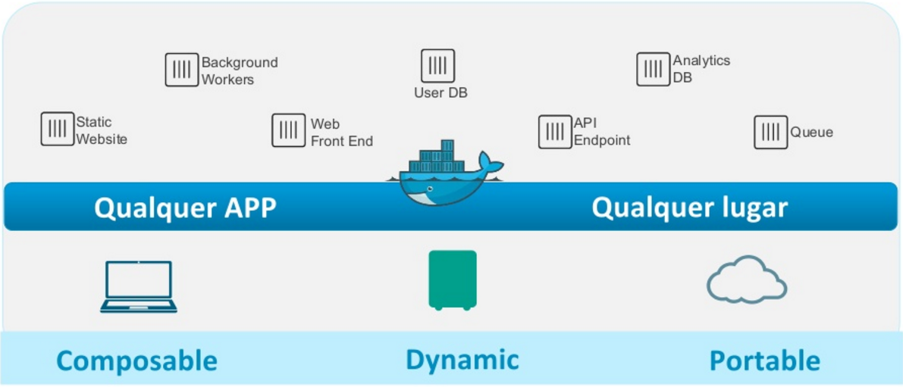Contâiner vs Máquina virtual
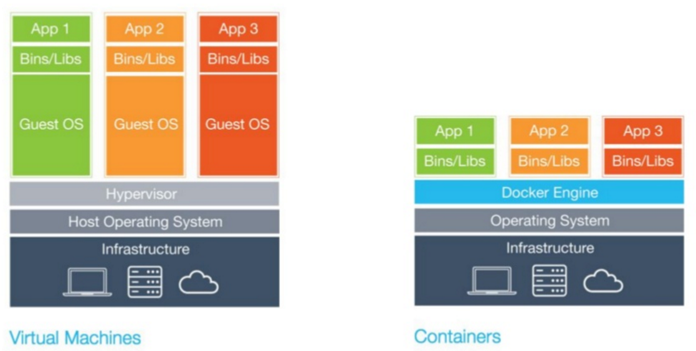Camadas
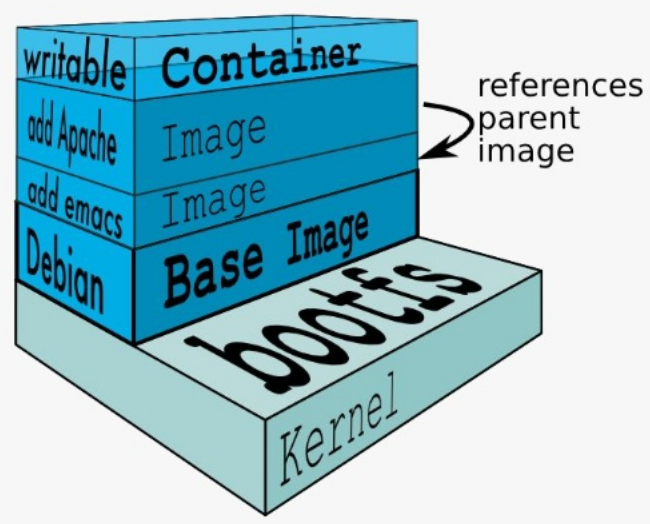Imagens e Containeres
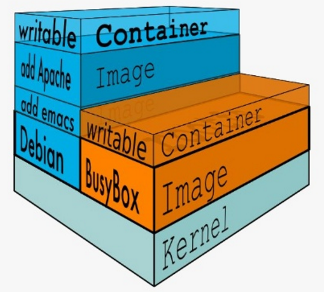Arquitetura
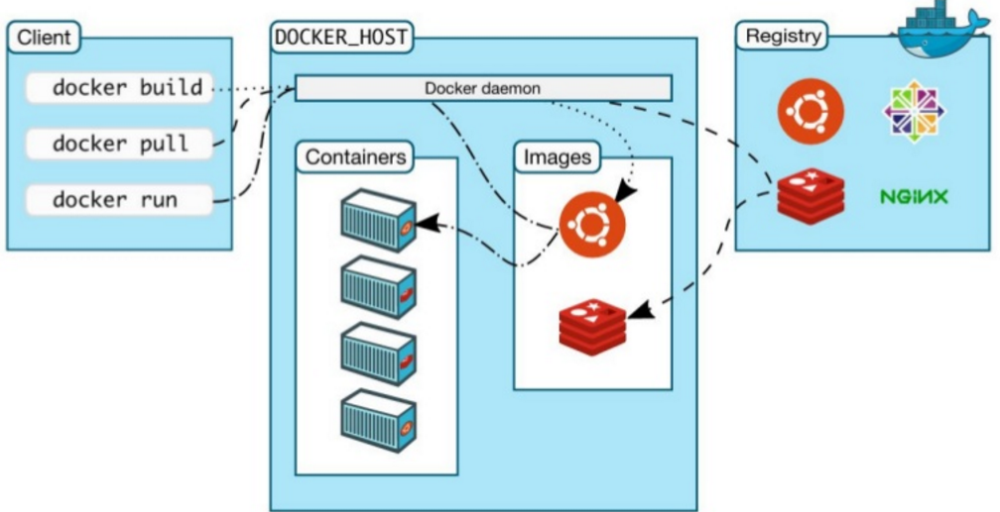Comandos básicos
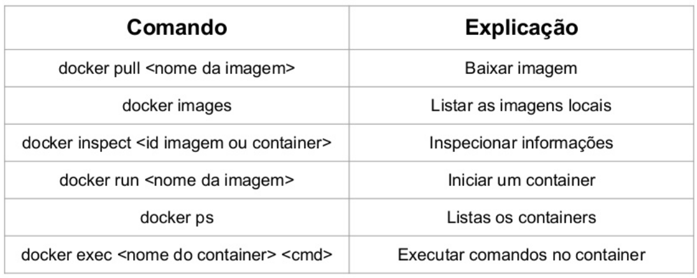Mapeamento de portas
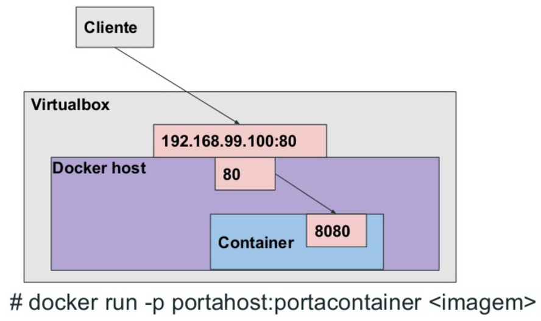Mapeamento de volumes
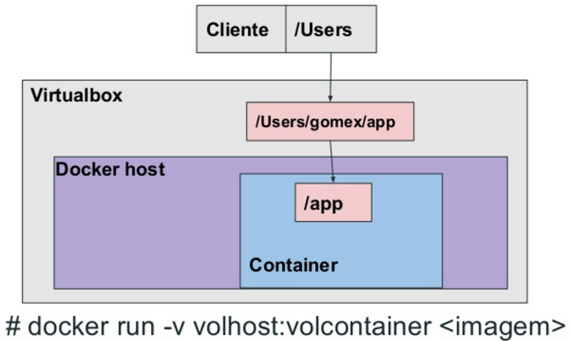Dockerfile
Arquivo de definição para criação de imagens
Recursos Dockerfile
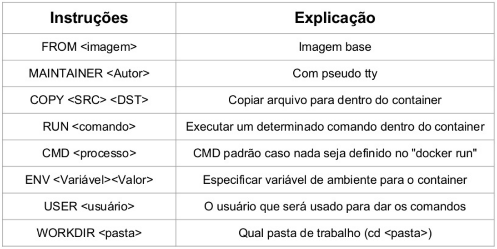Exemplo
Dockerfile Flask Python
FROM alpine:3.1
# Update
RUN apk add --update python py-pip
# Install app dependencies
RUN pip install Flask
# Bundle app source
COPY simpleapp.py /src/simpleapp.py
EXPOSE 8000
CMD ["python", "/src/simpleapp.py", "-p 8000"]
Multi Stage Build
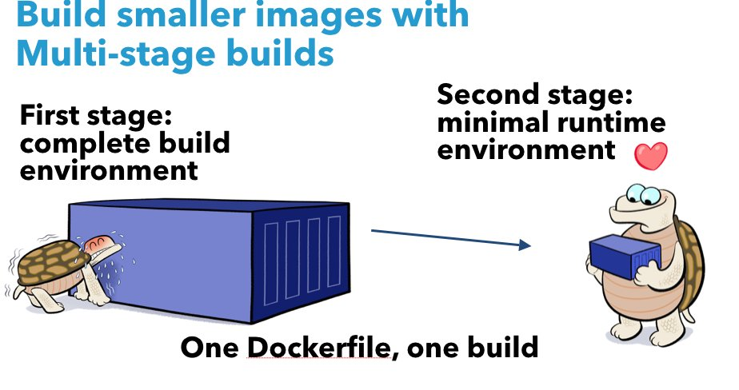Exemplo
Multi stage build
FROM golang:1.7.3
WORKDIR /go/src/github.com/alexellis/href-counter/
RUN go get -d -v golang.org/x/net/html
COPY app.go .
RUN CGO_ENABLED=0 GOOS=linux go build -a -installsuffix cgo -o app .
FROM alpine:latest
RUN apk --no-cache add ca-certificates
WORKDIR /root/
COPY --from=0 /go/src/github.com/alexellis/href-counter/app .
CMD ["./app"]
Video
Falando sobre GitlabCI
O que é Git
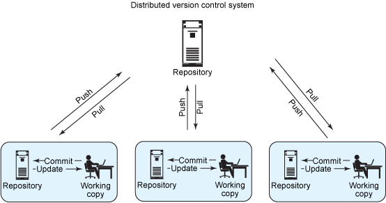O mais usado

...mas tem concorrente

Interface simples
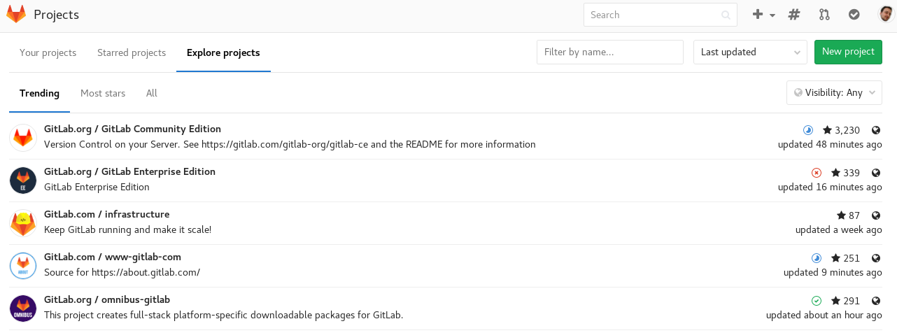Vantagens
- Instalação local
- Repositórios públicos e privados
- Suporte a autenticação LDAP
- Funciona com Docker
- Tem ferramenta de wiki e bug track
- Auto serviço
- Tem CI integrado
Exemplo
image: ruby:2.1
services:
- postgres
before_script:
- bundle install
after_script:
- rm secrets
job1:
stage: build
script:
- execute-script-for-job1
Falando sobre Teste de infraestrutura
Duvidas?
Rafael Gomes
- Engenheiro DevOps
- gomex@riseup.net
- @gomex
- Docker Captain
- gomex.github.io